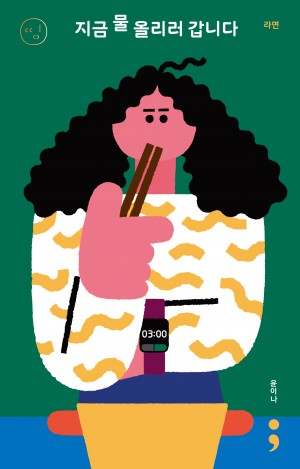
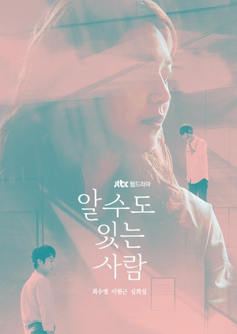
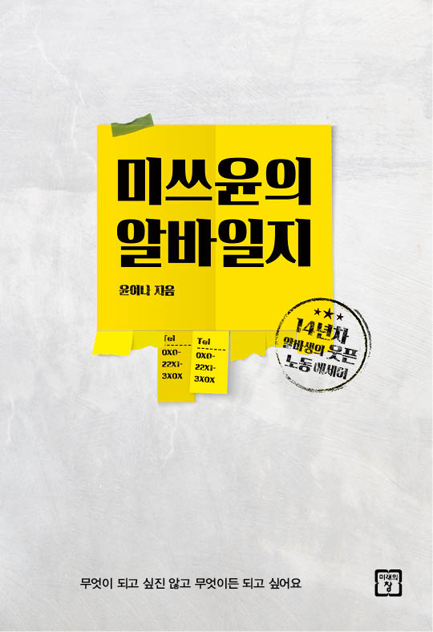

Escribiendo
las historias que comienzan
después del final
Escribiendo
las historias que comienzan
después del final
como escritora (19 años)
Guion de la serie de televisión de JTBC 'Alguien que puedes conocer'
Transmitido en Naver TV Cast del 31 de julio al 11 de agosto de 2017
y edición especial en JTBC el 2 de septiembre de 2017
especializada en entrevistas de cine
Guionista para la revista [MubMub] de CJ (Ago 2017 - Ene 2018)
Guionista de [Conociendo al actor] para Naver V (2015 - Ene 2017)
Contribuciones y conferencias en numerosos medios
Diarios: Korea Daily, Hankyoreh, etc.
Revistas: GQ, Harper's Bazaar, W, Cine21, PD Journal, etc.
Planificación 및 ejecución de contenido, entre otras experiencias
Planificación, producción y presentación del podcast [Sisterhood] Octubre 2018 ~ Enero 2023
Editora de la revista diaria del Festival Internacional de Cine de Mujeres de Seúl SIWFF Junio 2016
Reportera encargada del diario en coreano de KOBIZ del Consejo de Cine de Corea Agosto 2014 ~ Mayo 2015
Licenciatura en Literatura y Lengua Coreana / Comunicación y Medios
Licenciatura en Lengua y Literatura Españolas (Ingreso en 3.er año)
Actualmente en suspensión temporal de estudios
Coreano
lengua materna
Inglés
Capaz de mantener conversaciones cotidianas
Residencia de un año en Brisbane y seis meses en Melbourne
con visa de vacaciones y trabajo
IELTS 6.5
Español Nivel A2
según Duolingo, más de 1200 días
capaz de mantener conversaciones básicas, capaz de leer noticias relacionadas con el fútbol
Premio de Oro
en la categoría de Drama Especial de TV
en el ‘WorldFest-Houston International Film Festival’ 2018
Gran Premio
en el 'Busan International Web Content Festival’ 2018




✉️ yooninas@gmail.com
📱 +82 10-8861-2154
🏠 Seúl, Corea